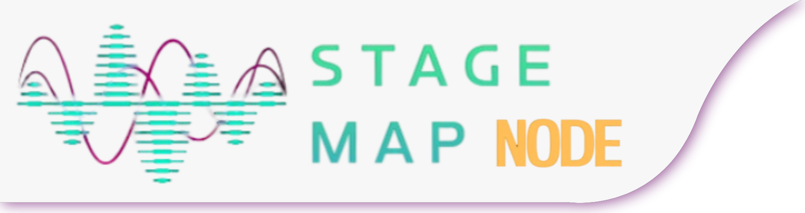

Organiza o teu palco.
Ouve a diferença.
Stage Map é um plugin VST3 que transforma a tua sessão numa vista de palco de cima para baixo — arrasta cada instrumento para o sítio certo, e opcionalmente deixa a posição controlar o volume, o filtro e o reverb, tal como aconteceria num palco a sério.
O que é o Stage Map
A maior parte dos plugins de mistura trabalha com números — dB, Hz, ms. O Stage Map trabalha com uma ideia mais simples: onde é que cada instrumento está no palco?
Arrasta um ponto para a esquerda ou direita e ele move-se entre os altifalantes (L / MONO / R). Arrasta-o para a frente do palco e — se ativares o Modo Ativo — ele fica mais alto, mais claro e mais seco; arrasta-o para trás e ele fica mais discreto, mais abafado e com mais reverb, como um instrumento realmente mais longe do público.
A arquitetura tem duas partes: um plugin Hub (insere-se uma vez, mostra o mapa completo do palco) e um plugin Node por cada instrumento/faixa. Os dois comunicam em tempo real dentro da mesma sessão da DAW.

Funcionalidades
Modo Visual / Ativo
Organiza sem tocar no áudio (Visual), ou deixa a profundidade controlar o volume de verdade (Ativo). Um interruptor no Hub controla todos os instrumentos ao mesmo tempo.
Filtro por distância
Um passa-baixo opcional, por instrumento, que abafa naturalmente quem está mais atrás no palco — desligado por defeito, liga-se com um clique.
Reverb + 5 salas
Reverb opcional cuja intensidade acompanha a profundidade, combinado com 5 presets de sala (Estúdio, Palco, Clube, Hall, Íntimo) escolhidos no Hub.
Cores e ícones
12 cores à escolha e um ícone automático para cada instrumento (bateria, guitarra, voz, cordas, sopros e muito mais) — de relance sabes o que é cada ponto.
Hub interativo
O Hub não é só um mapa — arrasta um ponto diretamente nele e o instrumento correspondente move-se de verdade, em tempo real.
Presets de organização
5 layouts de palco prontos, mais um espaço para guardares o teu próprio layout — aplica-os a partir do Node com um clique.
Desfazer / Refazer
Cada movimento conta como um passo — no Node e no Hub. Se arrastaste para o sítio errado, um clique resolve.
Automação total
Posição, filtro e reverb são parâmetros normais da tua DAW — automatiza-os, guarda-os com o projeto, usa-os como sempre.
Instalação
-
1. Descarrega
Vai à secção Download e obtém o pacote mais recente (ficheiros
.vst3para Windows). -
2. Copia para a pasta de VST3
Copia
StageMapNode.vst3eStageMapHub.vst3paraC:\Program Files\Common Files\VST3\. -
3. Faz rescan na tua DAW
Abre a tua DAW (FL Studio, Ableton, Reaper, etc.) e pede-lhe para procurar novos plugins — normalmente em Opções/Preferências → Gestão de Plugins.
-
4. Confirma
Procura por "StageMapHub" e "StageMapNode" na lista de efeitos (não instrumentos) da tua DAW.
Como usar
-
1. Insere um Hub
Insere StageMapHub numa faixa (ou no master) — é a partir daqui que vês e controlas o palco todo.
-
2. Insere um Node por instrumento
Em cada faixa que queiras mapear, insere StageMapNode. Escolhe o nome do instrumento numa lista (ou escreve o teu), e uma cor.
-
3. Organiza o palco
Arrasta cada ponto (no Node ou diretamente no Hub) para a posição que queres, ou usa "Organizar" no Node para aplicar um preset a todo o palco de uma vez.
-
4. Liga o Modo Ativo (opcional)
No Hub, muda de "Visual" para "Ativo" para a posição começar a afetar mesmo o volume — e, se quiseres, ativa o filtro e o reverb em cada Node.
-
5. Escolhe a sala (opcional)
Também no Hub, escolhe entre os 5 presets de sala para dar um caráter diferente ao reverb de todos os instrumentos.
Download
Versão para Windows (VST3). O código-fonte completo está disponível no GitHub.
Projeto em desenvolvimento ativo — se a página de releases ainda não tiver um pacote publicado, isso significa que a próxima versão está a caminho.